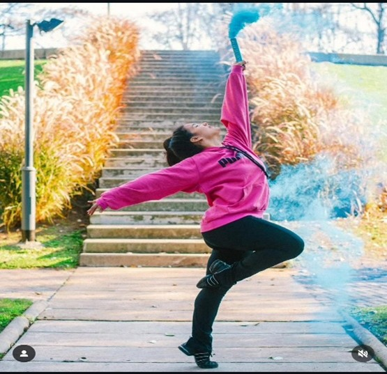
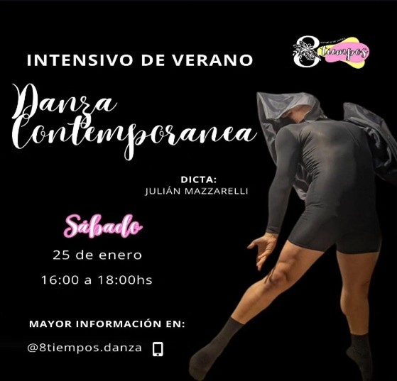
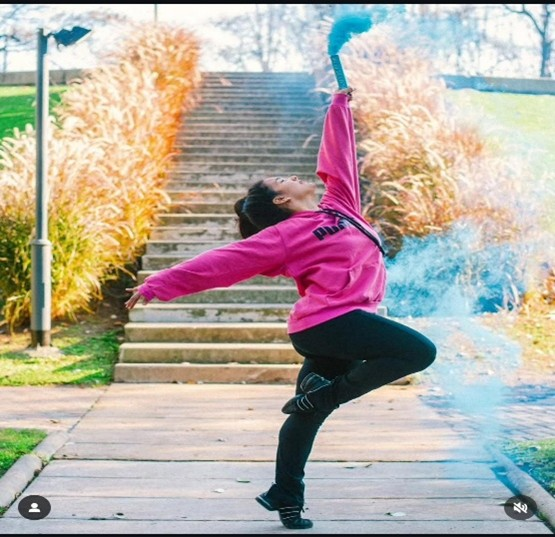
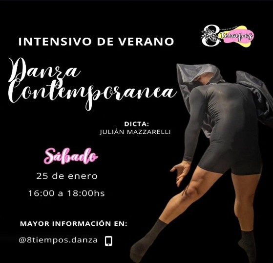

8 TIEMPOS - ESTUDIO DE DANZA
La danza jazz es una clasificación integrada por una amplia gama de estilos de baile. Antes de la década de 1950, se refiere a la danza originada a partir de estilos de danza africana vernácula de América. En la década de 1950 surgió un nuevo género de danza jazz, la danza moderna jazz, con raíces en la danza tradicional del Caribe. Todos los estilos personales de danza jazz tienen raíces atribuibles a uno de estos dos orígenes. Los distintos tipos de jazz son: el tradicional, el góspel, el funk y el primitivo afrocaribeño. Un estilo más pulido es el Broadway jazz, que se baila en los musicales de Nueva York y en otras ciudades. Emplea múltiples técnicas como las del ballet clásico, de la danza contemporánea y la expresión corporal.
 



La Danza Jazz fue tomando elementos del ballet, así como de otros bailes más modernos. Pasó por diferentes influencias de bailes como el charlestón, el big apple y el jitterbug. Como danza para el escenario, la danza teatral de la década de 1940 experimentó un desarrollo mayor y en las décadas de 1950 y 1960 surgió un estilo que tomaba los elementos que necesitaba tanto del ballet como de la danza moderna y del claqué. Así desde ese momento generando varias ramificaciones de la danza jazz. En la actualidad esta danza es más practicada por niños, adolescentes y adultos sin importar género o color de piel. Aplicando una gran variedad de movimientos modernos, que cada coreógrafo implementa desde su creatividad haciéndolo único y diferente.